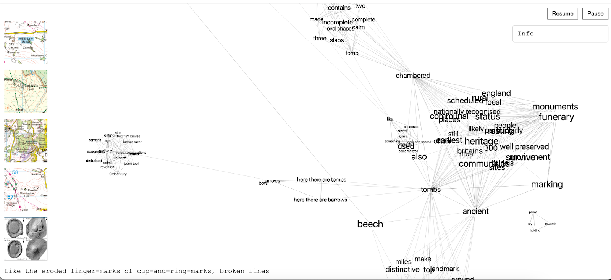
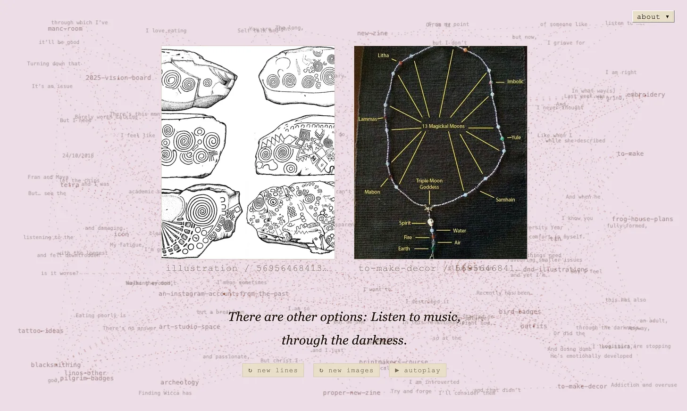

coding projects
experiments in js art and web archiving
-

pulling down the stones - 2024
pulling down the stones network graph
Pulling down the stones is a walking journal and data visualisation experiment, mapping the landmarks of the Old Stones pilgrimage - a three-day walk through the main neolithic monuments across the peak district - onto a 3D force-directed node graph.
This force-directed graph algorithm operates on the proximity of words and phrases ('tokens') within a sentence, and the shared repetition of those tokens within the text input. Forces then mimic attraction and repulsion to represent the strength of their connections, like roads between towns. This algorithm helps to visually organize and reveal the underlying structure of complex networks.
-

Recontextualising the archive of my Pinterest account into a rhizomatic map word-associated with timestamped journals. Meant to be a memory project. Website isn't public.